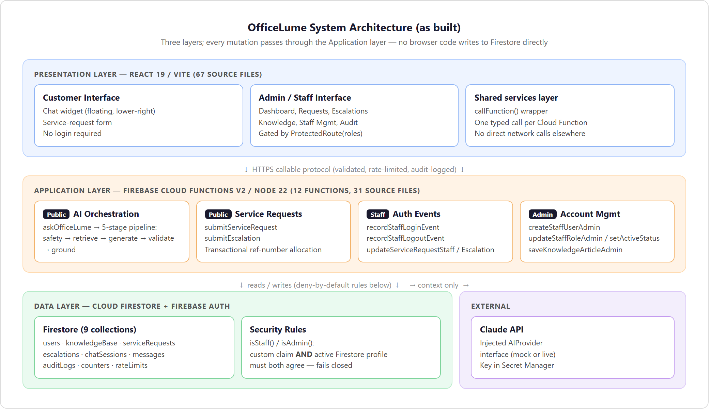
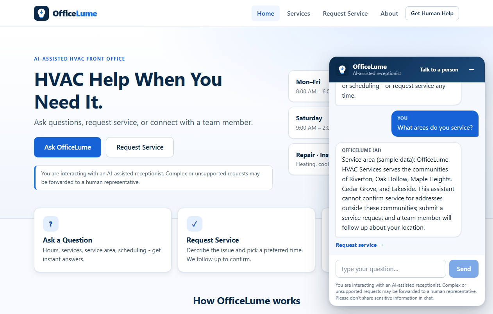
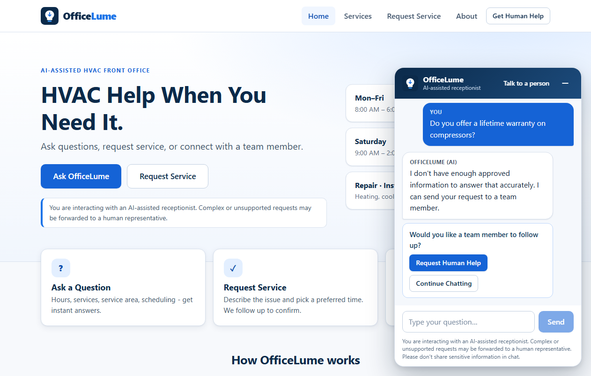
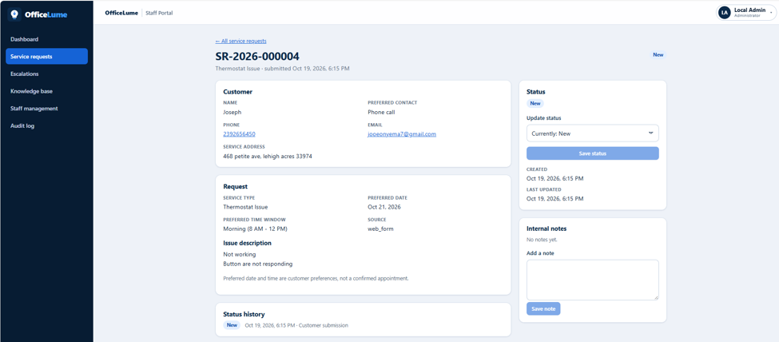
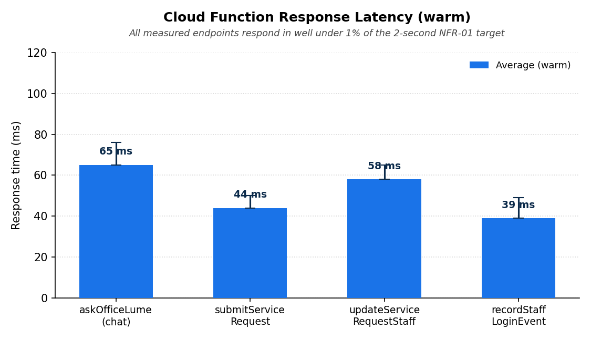
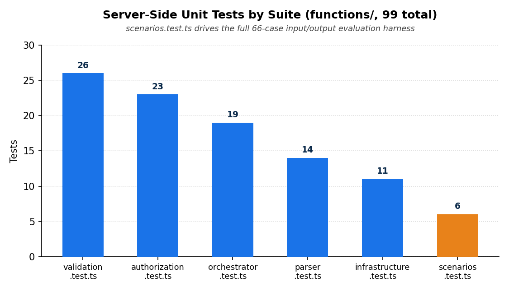

The problem
Small, appointment-based service businesses — HVAC, plumbing, and similar trades — often have no dedicated front-office staff. The owner answers calls, replies to messages, and keeps the schedule while also doing the job itself, which leads to missed leads and inconsistent customer experience.
Goal
Automate routine, answerable questions and request capture, while keeping a human in the loop for anything the system can't confidently handle.
Non-goal
Replace human judgment. The system is designed to escalate rather than guess whenever it lacks approved information.
Scope
Single-pilot HVAC business, text-only chat, service-request capture, role-gated staff admin — voice, CRM, and multi-tenant support are explicitly out of scope.
Architecture
A three-layer design — presentation, application, data — where every mutation passes through a Cloud Functions layer, and Firestore Security Rules independently re-check every staff and admin action.

It in action
The same chat widget, under the same conditions, behaves differently depending on whether it actually has an approved answer.



Measured results
Evaluated at four independent testing levels — unit, Firestore rules, integration, and acceptance-style smoke checks over the real HTTPS callable protocol — plus a 66-scenario correctness and escalation evaluation.


Technology
Engineering practices
- Formal functional & non-functional requirements (FR-01–FR-15, NFR-01–NFR-08), each traced to its implementing module and verifying test suite
- Two-branch Git Flow with four annotated milestone tags (v0.1.0 → v1.0.0)
- Deny-by-default Firestore rules requiring both a Firebase Auth custom claim and a live, matching Firestore profile
- Server-side-only AI calls — the client never holds or sends the Anthropic API key, which lives in Firebase Secret Manager
- Documented, honest limitations: no real Firebase deployment yet, live-Claude latency unmeasured, no App Check